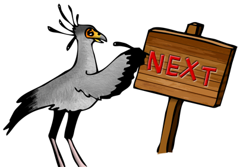

<polymer-element name="fa-img-nav">
    <template>
        <link rel="stylesheet" href="../styles/animate.css" noshim />
        <style>
            .fixed {
                display: block;
                position: fixed;
                width: 100%;
                bottom: 0;
                left: 0px;
            }
            .margin {
                margin-left: 300px;
            }

            img {
                position: absolute;
                bottom: 0;
            }

            button {
                position: absolute;
                width: 150px;
                height: 65px;
                cursor: pointer;
                background: transparent;
                border: none;
            }
            button:focus{
                outline: 0;
            }

            img[left] { 
                left: 0;
                z-index: 100;
            }

            img[right] {
                right: 0;
            }

            button[left] {
                bottom: 150px;
                left: 20px;
                z-index: 100;

                transform: rotate(-15deg);
                -webkit-transform: rotate(-15deg);
                -moz-transform: rotate(-15deg);
                -ms-transform: rotate(-15deg);
            }

            button[right] {
                bottom: 175px;
                right: 20px;

                transform: rotate(15deg);
                -webkit-transform: rotate(15deg);
                -moz-transform: rotate(15deg);
                -ms-transform: rotate(15deg);
            }

            .layout {
                position: relative;
                max-width: 1000px;
                margin: auto;
            }

            @media(max-width: 1200px) {
                .margin {
                    margin-left: 0px;
                }
            }

            @media(max-width: 768px) {
                .layout {
                    max-width: 500px;
                }

                button {
                    width: 75px;
                    height: 60px;
                }

                img[left] {
                    width: 100px;
                }
                img[right] {
                    width: 200px;
                }

                button[left] {
                    bottom: 45px;
                    left: 12px;
                }
                button[right] {
                    bottom: 50px;
                    right: 10px;
                }
            }

            @media(min-width: 768px) {
                img {
                    bottom: 40px;
                }
            }
        </style>

        <div style="position:relative">

            <div class="fixed">
                <div class="margin">
                    <div class="layout">
                        
                        <button on-tap="{{firePrev}}" left></button>

                        
                        <button on-tap="{{fireNext}}" right></button>
                    </div>
                </div>
            </div>

        </div>
    </template>
    <script>
        Polymer('fa-img-nav', {
            animations : ['rubberBand', 'bounceOut', 'rollIn', 'bounceOut', 'flipInX'],

            fireNext : function() {
                this.animateImg(this.$.right);
                this.fire('next');
            },

            firePrev : function() {
                this.animateImg(this.$.left);
                this.fire('previous');
            },

            animateImg : function(ele) {
                //var animation = this.animations[Math.floor(Math.random() * this.animations.length-1)];
                var animation = 'tada';

                ele.classList.add(animation);
                setTimeout(function(){
                    ele.classList.remove(animation);
                }.bind(this), 1000);
            }
        });
    </script>
</polymer-element>